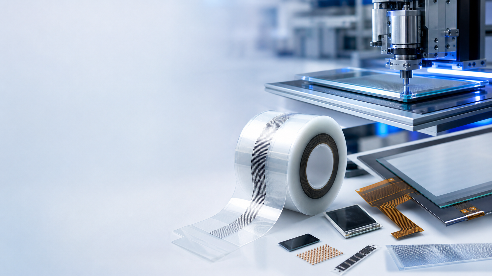

Knowledge
什么是 ACF？
ACF 即 Anisotropic Conductive Film，中文常称异方性导电胶膜，广泛用于显示面板、触控屏、FPC、COF、COG 等精密连接。

导通原理
ACF 的特点是 Z 轴方向导通、XY 平面方向绝缘。通过加热和加压，导电粒子在电极位置被压缩并形成电气连接，同时避免相邻电极短路。
主要组成
ACF 主要由树脂黏着剂和导电粒子组成。树脂提供接着、耐热、防湿和绝缘功能，并在固化后保持电极相对位置；导电粒子的粒径、分布和表面结构会影响导通电阻和短路风险。
典型工艺窗口
常见流程包含预贴、预压、本压与检测。预贴可在 60℃-100℃、2s-10s 量级范围内进行，本压可在约 150℃-200℃、10s-20s 量级范围内进行；实际参数必须以具体材料规格书和设备条件为准。
品牌与结构差异
Sony、Hitachi、Telephus 等品牌在导电粒子、树脂体系、单层/双层结构、细间距可靠性等方面各有特点。选型时应结合 pitch、基材、电极结构、可靠性要求、储存条件和量产窗口综合判断。
保存方式
ACF 通常需要低温保存。未开封 ACF 常见保存条件为 -10℃-5℃，开封后使用期限会明显缩短。请以所购材料标签和规格书为准，避免超期或高温存放影响性能。